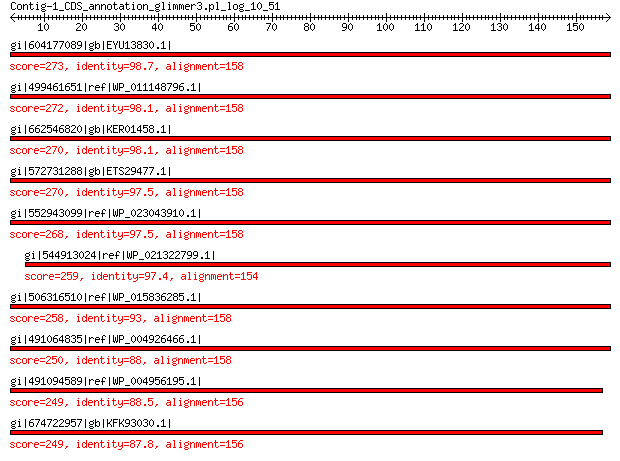

bitscore colors: <40, 40-50 , 50-80, 80-200, >200
 BLASTP 2.2.31+
Reference: Stephen F. Altschul, Thomas L. Madden, Alejandro A.
Schaffer, Jinghui Zhang, Zheng Zhang, Webb Miller, and David J.
Lipman (1997), "Gapped BLAST and PSI-BLAST: a new generation of
protein database search programs", Nucleic Acids Res. 25:3389-3402.
Reference for composition-based statistics: Alejandro A. Schaffer,
L. Aravind, Thomas L. Madden, Sergei Shavirin, John L. Spouge, Yuri
I. Wolf, Eugene V. Koonin, and Stephen F. Altschul (2001),
"Improving the accuracy of PSI-BLAST protein database searches with
composition-based statistics and other refinements", Nucleic Acids
Res. 29:2994-3005.
Database: All non-redundant GenBank CDS translations+PDB+SwissProt+PIR+PRF
excluding environmental samples from WGS projects
49,011,213 sequences; 17,563,301,199 total letters
Query= Contig-1_CDS_annotation_glimmer3.pl_log_10_51
Length=158
Score E
Sequences producing significant alignments: (Bits) Value
gi|604177089|gb|EYU13830.1| bacterioferritin 273 4e-91
gi|499461651|ref|WP_011148796.1| bacterioferritin 272 1e-90
gi|662546820|gb|KER01458.1| bacterioferritin 270 6e-90
gi|572731288|gb|ETS29477.1| bacterioferritin 270 8e-90
gi|552943099|ref|WP_023043910.1| bacterioferritin 268 7e-89
gi|544913024|ref|WP_021322799.1| bacterioferritin 259 2e-85
gi|506316510|ref|WP_015836285.1| bacterioferritin 258 3e-85
gi|491064835|ref|WP_004926466.1| bacterioferritin 250 6e-82
gi|491094589|ref|WP_004956195.1| bacterioferritin 249 1e-81
gi|674722957|gb|KFK93030.1| bacterioferritin 249 2e-81
>gi|604177089|gb|EYU13830.1| bacterioferritin [Photorhabdus luminescens BA1]
Length=158
Score = 273 bits (699), Expect = 4e-91, Method: Compositional matrix adjust.
Identities = 156/158 (99%), Positives = 157/158 (99%), Gaps = 0/158 (0%)
Query 1 MKGDKKMIAHLNKLLGNELVAINQYFLHARMFKNWGLTRLNDKEYHESIDEMKHADRYIE 60
MKGDKKMIAHLNKLLGNELVAINQYFLHARMFKNWGLTRLNDKEYHESIDEMKHADRYIE
Sbjct 1 MKGDKKMIAHLNKLLGNELVAINQYFLHARMFKNWGLTRLNDKEYHESIDEMKHADRYIE 60
Query 61 RILFLEGIPNLQDLGKLNIGEDIEEMLKSDLQLELQGARDLKEAIAYADSIHDYVSRdlm 120
RILFLEGIPNLQDLGKLNIGEDIEEMLKSDLQLELQGARDLKEAI YADSIHDYVSRDLM
Sbjct 61 RILFLEGIPNLQDLGKLNIGEDIEEMLKSDLQLELQGARDLKEAITYADSIHDYVSRDLM 120
Query 121 idildeeeehidwleTQFELIERMGIQNYTQAQILEGE 158
ID+LDEEEEHIDWLETQFELIERMGIQNYTQAQILEGE
Sbjct 121 IDVLDEEEEHIDWLETQFELIERMGIQNYTQAQILEGE 158
>gi|499461651|ref|WP_011148796.1| bacterioferritin [Photorhabdus luminescens]
gi|37528545|ref|NP_931890.1| bacterioferritin, iron storage and detoxification protein [Photorhabdus
luminescens subsp. laumondii TTO1]
gi|36787983|emb|CAE17100.1| bacterioferritin (BFR) (cytochrome B-1) (cytochrome B-557) [Photorhabdus
luminescens subsp. laumondii TTO1]
Length=158
Score = 272 bits (696), Expect = 1e-90, Method: Compositional matrix adjust.
Identities = 155/158 (98%), Positives = 158/158 (100%), Gaps = 0/158 (0%)
Query 1 MKGDKKMIAHLNKLLGNELVAINQYFLHARMFKNWGLTRLNDKEYHESIDEMKHADRYIE 60
MKGDKKMIAHLNKLLGNELVAINQYFLHARMFKNWGLTRLNDKEYHESIDEMKHADRYIE
Sbjct 1 MKGDKKMIAHLNKLLGNELVAINQYFLHARMFKNWGLTRLNDKEYHESIDEMKHADRYIE 60
Query 61 RILFLEGIPNLQDLGKLNIGEDIEEMLKSDLQLELQGARDLKEAIAYADSIHDYVSRdlm 120
RILFLEGIPNLQDLGKLNIGEDIEEMLKSDLQLELQGA+DLKEAIAYADSIHDYVSRDLM
Sbjct 61 RILFLEGIPNLQDLGKLNIGEDIEEMLKSDLQLELQGAKDLKEAIAYADSIHDYVSRDLM 120
Query 121 idildeeeehidwleTQFELIERMGIQNYTQAQILEGE 158
IDILDEEE+HIDWLETQFELIERMGIQNYTQ+QILEGE
Sbjct 121 IDILDEEEKHIDWLETQFELIERMGIQNYTQSQILEGE 158
>gi|662546820|gb|KER01458.1| bacterioferritin [Photorhabdus temperata subsp. temperata Meg1]
Length=158
Score = 270 bits (691), Expect = 6e-90, Method: Compositional matrix adjust.
Identities = 155/158 (98%), Positives = 158/158 (100%), Gaps = 0/158 (0%)
Query 1 MKGDKKMIAHLNKLLGNELVAINQYFLHARMFKNWGLTRLNDKEYHESIDEMKHADRYIE 60
MKGDKK+IAHLNKLLGNELVAINQYFLHARMFKNWGLTRLNDKEYHESIDEMKHADRYIE
Sbjct 1 MKGDKKIIAHLNKLLGNELVAINQYFLHARMFKNWGLTRLNDKEYHESIDEMKHADRYIE 60
Query 61 RILFLEGIPNLQDLGKLNIGEDIEEMLKSDLQLELQGARDLKEAIAYADSIHDYVSRdlm 120
RILFLEGIPNLQDLGKLNIGEDIEEMLKSDLQLELQGA+DL+EAIAYADSIHDYVSRDLM
Sbjct 61 RILFLEGIPNLQDLGKLNIGEDIEEMLKSDLQLELQGAKDLREAIAYADSIHDYVSRDLM 120
Query 121 idildeeeehidwleTQFELIERMGIQNYTQAQILEGE 158
IDILDEEEEHIDWLETQFELIERMGIQNYTQAQILEGE
Sbjct 121 IDILDEEEEHIDWLETQFELIERMGIQNYTQAQILEGE 158
>gi|572731288|gb|ETS29477.1| bacterioferritin [Photorhabdus temperata subsp. khanii NC19]
Length=158
Score = 270 bits (690), Expect = 8e-90, Method: Compositional matrix adjust.
Identities = 154/158 (97%), Positives = 157/158 (99%), Gaps = 0/158 (0%)
Query 1 MKGDKKMIAHLNKLLGNELVAINQYFLHARMFKNWGLTRLNDKEYHESIDEMKHADRYIE 60
MKGDKK+IAHLNKLLGNELVAINQYFLHARMFKNWGLTRLNDKEYHESIDEMKHADRYIE
Sbjct 1 MKGDKKIIAHLNKLLGNELVAINQYFLHARMFKNWGLTRLNDKEYHESIDEMKHADRYIE 60
Query 61 RILFLEGIPNLQDLGKLNIGEDIEEMLKSDLQLELQGARDLKEAIAYADSIHDYVSRdlm 120
RILFLEGIPNLQDLGKLNIGEDIEEMLKSDLQLELQGA+DL+EAIAYADSIHDYVSRDLM
Sbjct 61 RILFLEGIPNLQDLGKLNIGEDIEEMLKSDLQLELQGAKDLREAIAYADSIHDYVSRDLM 120
Query 121 idildeeeehidwleTQFELIERMGIQNYTQAQILEGE 158
IDILDEEE HIDWLETQFELIERMGIQNYTQAQILEGE
Sbjct 121 IDILDEEEGHIDWLETQFELIERMGIQNYTQAQILEGE 158
>gi|552943099|ref|WP_023043910.1| bacterioferritin [Photorhabdus temperata]
gi|550875218|gb|ERT14251.1| bacterioferritin [Photorhabdus temperata J3]
Length=158
Score = 268 bits (684), Expect = 7e-89, Method: Compositional matrix adjust.
Identities = 154/158 (97%), Positives = 157/158 (99%), Gaps = 0/158 (0%)
Query 1 MKGDKKMIAHLNKLLGNELVAINQYFLHARMFKNWGLTRLNDKEYHESIDEMKHADRYIE 60
MKGDKK+IAHLNKLLGNELVAINQYFLHARMFKNWGLTRLNDKEYHESIDEMKHADRYIE
Sbjct 1 MKGDKKIIAHLNKLLGNELVAINQYFLHARMFKNWGLTRLNDKEYHESIDEMKHADRYIE 60
Query 61 RILFLEGIPNLQDLGKLNIGEDIEEMLKSDLQLELQGARDLKEAIAYADSIHDYVSRdlm 120
RILFLEGIPNLQDLGKLNIGEDIEEMLKSDLQLELQGA+DL+EAIAYADSIHDYVSRDLM
Sbjct 61 RILFLEGIPNLQDLGKLNIGEDIEEMLKSDLQLELQGAKDLREAIAYADSIHDYVSRDLM 120
Query 121 idildeeeehidwleTQFELIERMGIQNYTQAQILEGE 158
IDILDEEEEHIDWLETQFELI RMGIQNYTQAQILEGE
Sbjct 121 IDILDEEEEHIDWLETQFELIGRMGIQNYTQAQILEGE 158
>gi|544913024|ref|WP_021322799.1| bacterioferritin [Photorhabdus temperata]
gi|530711223|gb|EQC02084.1| bacterioferritin [Photorhabdus temperata subsp. temperata M1021]
Length=156
Score = 259 bits (662), Expect = 2e-85, Method: Compositional matrix adjust.
Identities = 150/154 (97%), Positives = 153/154 (99%), Gaps = 0/154 (0%)
Query 5 KKMIAHLNKLLGNELVAINQYFLHARMFKNWGLTRLNDKEYHESIDEMKHADRYIERILF 64
KK+IAHLNKLLGNELVAINQYFLHARMFKNWGLTRLNDKEYHESIDEMKHADRYIERILF
Sbjct 3 KKIIAHLNKLLGNELVAINQYFLHARMFKNWGLTRLNDKEYHESIDEMKHADRYIERILF 62
Query 65 LEGIPNLQDLGKLNIGEDIEEMLKSDLQLELQGARDLKEAIAYADSIHDYVSRdlmidil 124
LEGIPNLQDLGKLNIGEDIEEMLKSDLQLELQGA+DL+EAIAYADSIHDYVSRDLMIDIL
Sbjct 63 LEGIPNLQDLGKLNIGEDIEEMLKSDLQLELQGAKDLREAIAYADSIHDYVSRDLMIDIL 122
Query 125 deeeehidwleTQFELIERMGIQNYTQAQILEGE 158
DEEEEHIDWLETQFELI RMGIQNYTQAQILEGE
Sbjct 123 DEEEEHIDWLETQFELIGRMGIQNYTQAQILEGE 156
>gi|506316510|ref|WP_015836285.1| bacterioferritin [Photorhabdus asymbiotica]
gi|253991691|ref|YP_003043047.1| bacterioferritin (bfr) (cytochrome b-1) (cytochrome b-557) [Photorhabdus
asymbiotica]
gi|253783141|emb|CAQ86306.1| bacterioferritin (bfr) (cytochrome b-1) (cytochrome b-557) [Photorhabdus
asymbiotica]
Length=158
Score = 258 bits (660), Expect = 3e-85, Method: Compositional matrix adjust.
Identities = 147/158 (93%), Positives = 152/158 (96%), Gaps = 0/158 (0%)
Query 1 MKGDKKMIAHLNKLLGNELVAINQYFLHARMFKNWGLTRLNDKEYHESIDEMKHADRYIE 60
MKGDKK+IA+LNKLLGNELVAINQYFLHARMFKNWGLTRLN+KEYHESIDEMKHADRYIE
Sbjct 1 MKGDKKIIAYLNKLLGNELVAINQYFLHARMFKNWGLTRLNEKEYHESIDEMKHADRYIE 60
Query 61 RILFLEGIPNLQDLGKLNIGEDIEEMLKSDLQLELQGARDLKEAIAYADSIHDYVSRdlm 120
RILFLEG+PNLQDLGKLNIGEDIEEML SDL LELQGA DL+EAIAYADSIHDYVSRDLM
Sbjct 61 RILFLEGVPNLQDLGKLNIGEDIEEMLTSDLHLELQGAHDLREAIAYADSIHDYVSRDLM 120
Query 121 idildeeeehidwleTQFELIERMGIQNYTQAQILEGE 158
IDILD EE HIDWLETQ ELIERMGIQNYTQAQILEGE
Sbjct 121 IDILDAEEGHIDWLETQLELIERMGIQNYTQAQILEGE 158
>gi|491064835|ref|WP_004926466.1| bacterioferritin [Providencia stuartii]
gi|188019733|gb|EDU57773.1| bacterioferritin [Providencia stuartii ATCC 25827]
Length=158
Score = 250 bits (639), Expect = 6e-82, Method: Compositional matrix adjust.
Identities = 139/158 (88%), Positives = 151/158 (96%), Gaps = 0/158 (0%)
Query 1 MKGDKKMIAHLNKLLGNELVAINQYFLHARMFKNWGLTRLNDKEYHESIDEMKHADRYIE 60
MKGDKKMIAHLNKLLGNELVAINQYFLHARMFKNWGLTRLN+ EYHESIDEMKHAD+YIE
Sbjct 1 MKGDKKMIAHLNKLLGNELVAINQYFLHARMFKNWGLTRLNEVEYHESIDEMKHADKYIE 60
Query 61 RILFLEGIPNLQDLGKLNIGEDIEEMLKSDLQLELQGARDLKEAIAYADSIHDYVSRdlm 120
RILFLEGIPNLQDLGKLNIGEDIEEML SDL+LEL GA++LKEAI+YADSIHDYVSRDLM
Sbjct 61 RILFLEGIPNLQDLGKLNIGEDIEEMLASDLKLELDGAKNLKEAISYADSIHDYVSRDLM 120
Query 121 idildeeeehidwleTQFELIERMGIQNYTQAQILEGE 158
I+IL +EE HIDW+ETQ +LI+RMGIQNYTQAQI+E E
Sbjct 121 IEILADEENHIDWIETQLDLIKRMGIQNYTQAQIIEEE 158
>gi|491094589|ref|WP_004956195.1| bacterioferritin [Serratia odorifera]
gi|291424223|gb|EFE97438.1| bacterioferritin [Serratia odorifera DSM 4582]
Length=159
Score = 249 bits (637), Expect = 1e-81, Method: Compositional matrix adjust.
Identities = 138/156 (88%), Positives = 150/156 (96%), Gaps = 0/156 (0%)
Query 1 MKGDKKMIAHLNKLLGNELVAINQYFLHARMFKNWGLTRLNDKEYHESIDEMKHADRYIE 60
MKGDKK+IAHLNKLLGNELVAINQYFLHARMFKNWGL RLNDKEYHESIDEMKHADRYIE
Sbjct 1 MKGDKKIIAHLNKLLGNELVAINQYFLHARMFKNWGLMRLNDKEYHESIDEMKHADRYIE 60
Query 61 RILFLEGIPNLQDLGKLNIGEDIEEMLKSDLQLELQGARDLKEAIAYADSIHDYVSRdlm 120
RILFLEG+PNLQDLGKLNIGEDIEEML+SDL LELQGARDL+E IAYADSIHDYVSRDLM
Sbjct 61 RILFLEGLPNLQDLGKLNIGEDIEEMLRSDLDLELQGARDLREGIAYADSIHDYVSRDLM 120
Query 121 idildeeeehidwleTQFELIERMGIQNYTQAQILE 156
I+IL +EE+HIDWLET+ +LI+R+GIQNY QAQ+LE
Sbjct 121 IEILADEEQHIDWLETELDLIQRLGIQNYAQAQVLE 156
>gi|674722957|gb|KFK93030.1| bacterioferritin [Serratia sp. Ag2]
gi|674729400|gb|KFK99281.1| bacterioferritin [Serratia sp. Ag1]
Length=159
Score = 249 bits (635), Expect = 2e-81, Method: Compositional matrix adjust.
Identities = 137/156 (88%), Positives = 148/156 (95%), Gaps = 0/156 (0%)
Query 1 MKGDKKMIAHLNKLLGNELVAINQYFLHARMFKNWGLTRLNDKEYHESIDEMKHADRYIE 60
MKGDKK+IAHLNKLLGNELVAINQYFLHARMFKNWGLTRLN+KEYHESIDEMKHADRYIE
Sbjct 1 MKGDKKLIAHLNKLLGNELVAINQYFLHARMFKNWGLTRLNEKEYHESIDEMKHADRYIE 60
Query 61 RILFLEGIPNLQDLGKLNIGEDIEEMLKSDLQLELQGARDLKEAIAYADSIHDYVSRdlm 120
RILFLEGIPNLQDLGKLNIGEDIEEML+SDL LEL+GA++L+E IAYADSIHDYVSRDLM
Sbjct 61 RILFLEGIPNLQDLGKLNIGEDIEEMLRSDLALELEGAKNLREGIAYADSIHDYVSRDLM 120
Query 121 idildeeeehidwleTQFELIERMGIQNYTQAQILE 156
D+L +EE HIDWLET+ LIER+GIQNY QAQILE
Sbjct 121 KDVLADEEAHIDWLETELSLIERLGIQNYAQAQILE 156
Lambda K H a alpha
0.319 0.138 0.387 0.792 4.96
Gapped
Lambda K H a alpha sigma
0.267 0.0410 0.140 1.90 42.6 43.6
Effective search space used: 430418943762